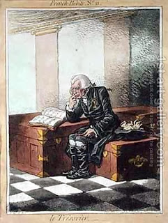

Shekalim 5 - Accidents
If the half-shekels were too heavy to carry, one could exchange them for smaller golden coins of larger value, called "darkon." The collection chests, called "shofar" due to the shape, were set up in every city. They were regularly emptied and transported to Jerusalem.
If, while being transported, the coins were lost or stolen, the agents who transported them would have to swear an oath that they have not been negligent - and then they would be free of the obligation to pay. Who do they swear to? If in the Temple the money has already been separated for the purposes of buying sacrifices, then the condition was that the money on the way would also included. Thus, in this case the money was considered in the possession of the Temple, and the agents would swear to the Temple's treasurers. However, if the accident happened before the money was separated, the agents would swear to the townspeople - and the latter would have to undertake another collection.
If, after being thought missing, the coins were found, then both the first and the second collection have acquired the designation of "half-shekel" and cannot be taken back; moreover, the extra coins they cannot be used for the next year either, because they were designated for this year. What do they do? They put them in another collection box, called "Old shekalim". These monies were used not for sacrifices but for the betterment of the city of Jerusalem.
Art: The Treasurer by James Gillray